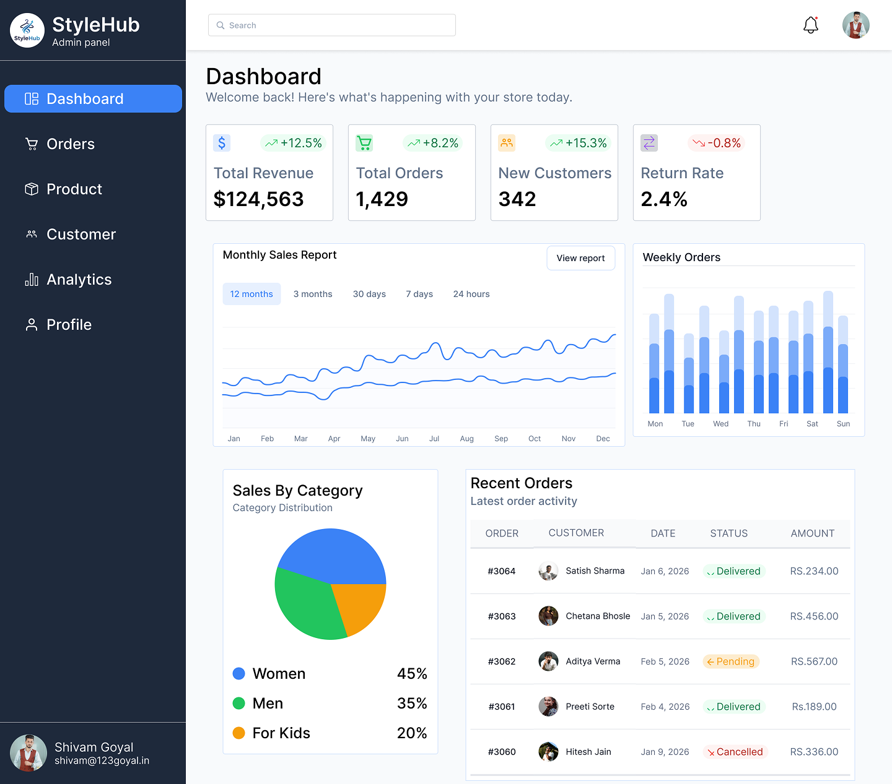
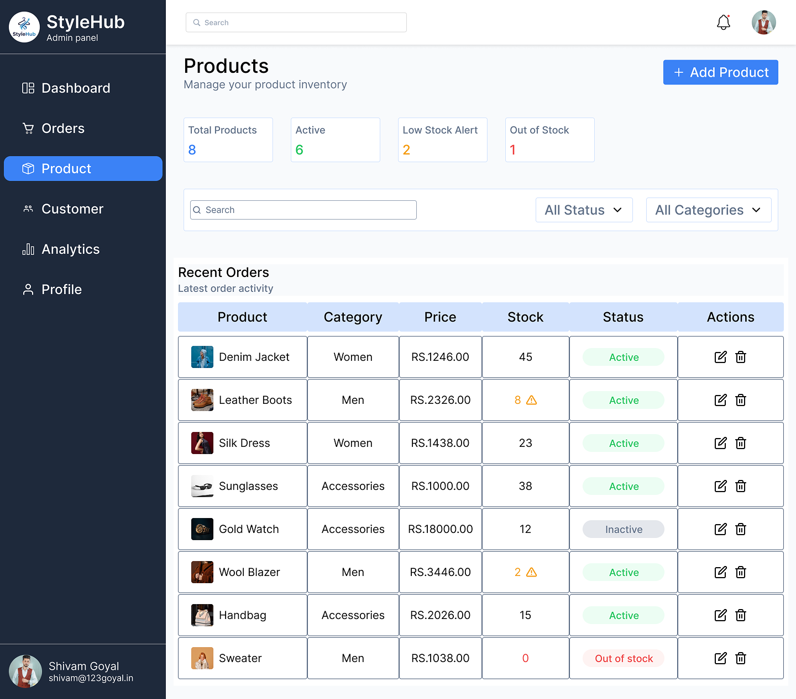
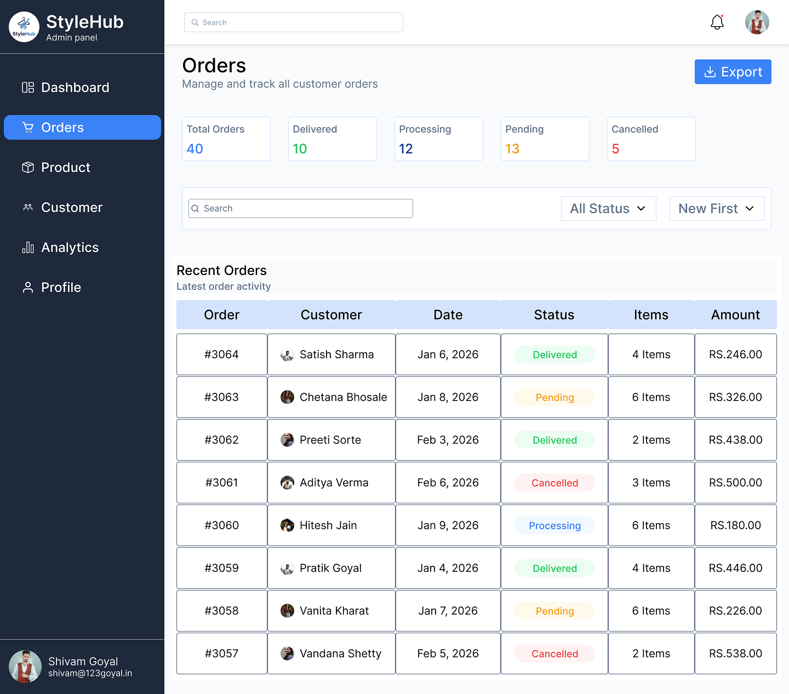
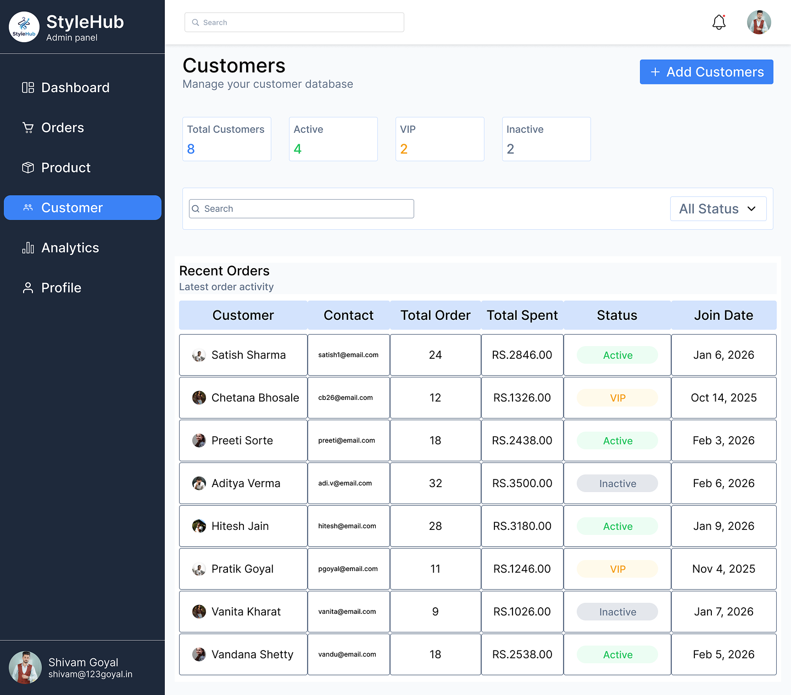
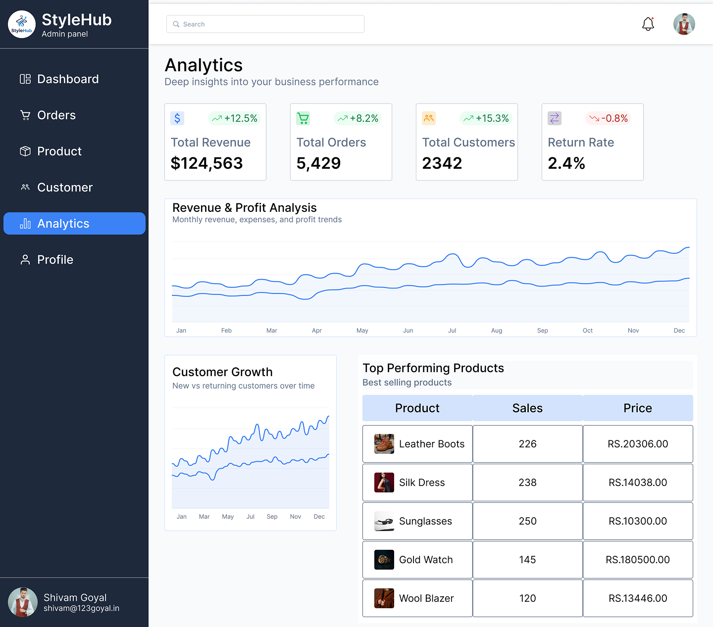

StyleHub
A fashion e-commerce dashboard designed to help store owners manage products, orders, customers, inventory, and business performance from one place.

Project Overview
StyleHub is a fashion e-commerce dashboard that gives store owners a centralized space to manage products, orders, customers, inventory, and business performance.
UI/UX Designer
Web Dashboard
Figma
4 Weeks
Making store management clearer.
The goal was to create a centralized dashboard that makes business performance, products, inventory, orders, customers, and daily operations easier to understand and manage.
- Dashboard hierarchy
- Products and inventory
- Order management
- Customer management
- Business metrics
- Navigation and consistency
Too much information, too little clarity.
E-commerce store management can involve multiple tasks and large amounts of information. Without a clear hierarchy, understanding performance and completing daily tasks can become difficult.
Information Overload
Important business information can get lost when too many metrics and controls compete for attention.
Scattered Tasks
Managing products, orders, customers, and inventory can require switching between different areas.
Poor Hierarchy
Without clear prioritization, important metrics and everyday actions can become harder to find.
Everything important, in one place.
StyleHub brings performance metrics, products, orders, customers, inventory, and notifications together through a modular dashboard structure.
Performance
Quick access to important business metrics and sales performance.
Products
Centralized product and category management for everyday store operations.
Orders
Clear order information and status visibility for easier management.
Inventory
A dedicated space for monitoring and managing available stock.


Research & Analysis
Competitive Analysis
Existing e-commerce and business dashboards were studied to understand common patterns for metrics, navigation, products, orders, and management tasks.
Use Cases
Key use cases included checking performance, managing products, monitoring inventory, processing orders, viewing customers, and checking notifications.
Pain Points
Information overload, difficult metrics, time-consuming management, poor hierarchy, and switching between tasks were key pain points.
Designing around everyday tasks.
The dashboard concept was shaped around the everyday needs of store owners, with a focus on quick metrics, product management, order management, customers, inventory, and notifications.
Organizing the dashboard.
The information architecture groups the most important store-management tasks into clear navigation areas.
Structure before visual polish.
Low-fidelity wireframes explored dashboard structure, navigation, content placement, key metrics, and product and order management.

Refining the dashboard experience.
- Prioritized the most important business metrics.
- Used modular cards to organize information.
- Simplified navigation across management areas.
- Improved spacing and alignment.
- Made product and order access easier.
- Maintained consistent visual hierarchy.
The final experience.
Dashboard
Products

Orders

Customers

Analytics

Notifications
Building a consistent system.
StyleHub uses neutral backgrounds with accent colors and a clean sans-serif visual language.
The design system focuses on clarity, consistency, efficiency, and scalability.
Explore the dashboard flow.
The prototype connects the dashboard, products, product details, orders, customers, and analytics into a connected management experience.
View Interactive Prototype →What I learned.
Dashboard UX
Designing interfaces that help users understand large amounts of information quickly.
Data Organization
Structuring metrics, tables, and management information into clear visual groups.
Scalable Systems
Creating reusable components and patterns that can support a growing dashboard.
A centralized space for store management.
StyleHub brings important e-commerce management tasks into one structured dashboard, strengthening the overall experience through clear hierarchy, navigation, data organization, and reusable components.
Where it could go next.
- Advanced analytics
- Sales forecasting
- Low-stock alerts
- Automated inventory management
- Bulk product management
- Advanced order filtering
- Customer segmentation
- Reports and exports
- Dark mode
- Personalized dashboard widgets